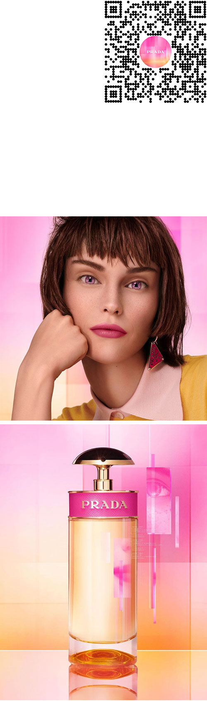

PRADA / CANDY — RETHINK REALITY
AR (2021)
Recently, Prada relaunched Candy, the fragrance.
Its campaign — titled 'Rethink Reality' — invites the audience to experience our world through an alternate lens. To accompany this intent, we developed an AR extension that distorts reality through stylistic glitches, intermittently revealing the campaign's virtual muse through modular portals.
Creative direction / Helena Dong with McCann Paris
AR development / Simone
⑆⑈⑉ Try Candy — Rethink Reality
AR (2021)
Recently, Prada relaunched Candy, the fragrance.
Its campaign — titled 'Rethink Reality' — invites the audience to experience our world through an alternate lens. To accompany this intent, we developed an AR extension that distorts reality through stylistic glitches, intermittently revealing the campaign's virtual muse through modular portals.
Creative direction / Helena Dong with McCann Paris
AR development / Simone
⑆⑈⑉ Try Candy — Rethink Reality
Thumbnails / Prada Rethink Reality